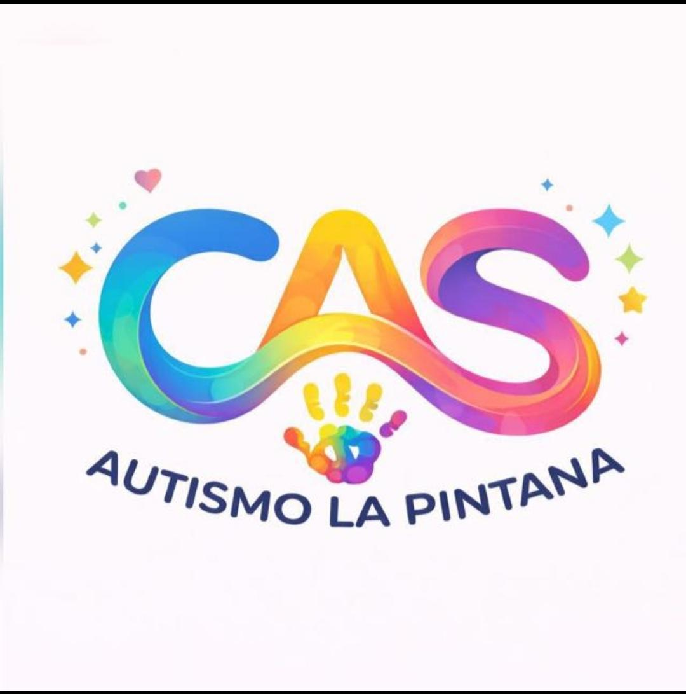

☰


El Centro de Acción Social de Autismo La Pintana nació en 2016 a partir de la iniciativa de un grupo de familias de la comuna que buscaban acceder a terapias de calidad para sus hijos. Las primeras atenciones comenzaron en un espacio facilitado por el Liceo Víctor Jara. Con el compromiso y perseverancia de las familias, posteriormente se logró gestionar el terreno en comodato donde actualmente funciona nuestro centro. Hoy acompañamos a más de 250 familias, ofreciendo terapias de Fonoaudiología, Terapia Ocupacional, Kinesiología y Psicología, además de talleres y actividades para niños, jóvenes, adultos y sus cuidadores. Nuestro propósito sigue siendo el mismo que nos dio origen: promover el acceso a atenciones de calidad, dignas y accesibles, construyendo una comunidad basada en el respeto, la inclusión y el acompañamiento.
Una historia que nació de una necesidad y que, con los años, se transformó en una comunidad. Hace casi 10 años, un grupo de familias de la comuna de La Pintana comenzó a enfrentarse a una realidad que, lamentablemente, sigue siendo una barrera para muchas personas: sus hijos necesitaban apoyo terapéutico, pero acceder a atenciones de calidad significaba asumir costos que muchas familias no podían sostener. Frente a esta necesidad, fueron las propias familias quienes decidieron organizarse y buscar una alternativa.
Gracias a las gestiones y al compromiso de aquellos primeros padres y madres, se consiguió un espacio en el Liceo Víctor Jara de La Pintana, donde comenzaron a realizarse las primeras atenciones terapéuticas en un espacio compartido. No teníamos grandes instalaciones ni todos los recursos que tenemos hoy. Pero había algo mucho más importante: la convicción de que las familias de nuestra comuna merecían una alternativa diferente. Con el paso de los años, y gracias al trabajo y la perseverancia de nuestra comunidad, se logró gestionar un terreno en comodato, lugar donde actualmente se encuentra nuestro centro. Y así, poco a poco, aquel sueño que comenzó entre familias fue tomando forma y convirtiéndose en un espacio pensado para acompañar, acoger y brindar oportunidades.
Desde nuestros comienzos, hemos mantenido una convicción que sigue guiando cada una de nuestras decisiones: El acceso a terapias de calidad y dignas no debería depender de la capacidad económica de una familia. Por eso, trabajamos para ofrecer atenciones terapéuticas accesibles, profesionales y centradas en las necesidades de cada persona, sin dejar de lado algo que para nosotros es fundamental: el respeto, la empatía y el compromiso humano. Hoy, con mucho orgullo, acompañamos a más de 250 familias, brindando atención en:
🧩 Terapia OcupacionalDurante el año también generamos talleres para padres y cuidadores, actividades de habilidades sociales, celebraciones y distintos espacios de encuentro, porque creemos que acompañar a una persona significa también acompañar a quienes caminan junto a ella. Cada actividad, cada taller, cada terapia y cada encuentro forma parte de un mismo propósito: construir una comunidad donde las personas neurodivergentes y sus familias puedan sentirse acogidas, respetadas y parte.
Miramos hacia atrás y vemos mucho más que un centro de atención.
Vemos a las familias que creyeron en este proyecto cuando apenas comenzaba. Vemos a quienes dedicaron tiempo y esfuerzo para abrir las primeras puertas. Vemos a los profesionales que han entregado sus conocimientos y experiencia. Vemos a cada niño, niña, adolescente y adulto que ha pasado por nuestro espacio. Vemos avances, aprendizajes, desafíos superados y también momentos difíciles que nos han enseñado a seguir creciendo.
Y, sobre todo, vemos una comunidad que se ha construido entre todos. Nuestro desafío hoy es seguir creciendo sin perder aquello que nos dio origen: la necesidad de que nadie tenga que elegir entre recibir una terapia de calidad y poder pagarla. Seguiremos trabajando para que La Pintana cuente con un espacio donde la inclusión no sea solamente una palabra, sino una forma de mirar, acompañar y construir. Porque nuestra historia comenzó con una necesidad, pero ha continuado gracias a las personas que decidieron convertir esa necesidad en una oportunidad.
Ofrecemos terapias especializadas para abordar las necesidades individuales de cada niño, promoviendo su desarrollo integral.
.webp)
Celebramos las fiestas patrias en nuestro centro, involucrando a toda la comunidad.
Fecha: 📅 Septiembre 2026
Participantes: Comunidad CAS
.webp)


Contamos con un equipo de terapeutas especializados en cada área, comprometidos con el bienestar y desarrollo de cada niño.

Vannia Salinas - Fonoaudióloga

Vania Pincheira - Fonoaudióloga

Karen Contreras - Fonoaudióloga

Fernanda Sanhueza - Fonoaudióloga

Daniela Rodríguez - Fonoaudióloga

Diego Bustamante - Fonoaudiólogo

Paulina Mella - Kinesióloga

Alejandro Prats - Psicólogo

Felipe Arellano - Psicólogo

Iván Correa - Terapeuta Ocupacional

Nadia Vasquez - Terapeuta Ocupacional

Maggie Farias - Terapeuta Ocupacional

Leyla Soto - Terapeuta Ocupacional

Javiera Maldonado - Terapeuta Ocupacional

Francisca Rios - Terapeuta Ocupacional

Catalina Marin - Terapeuta Ocupacional

Tamara Silva - Evaluadora ADOS-2